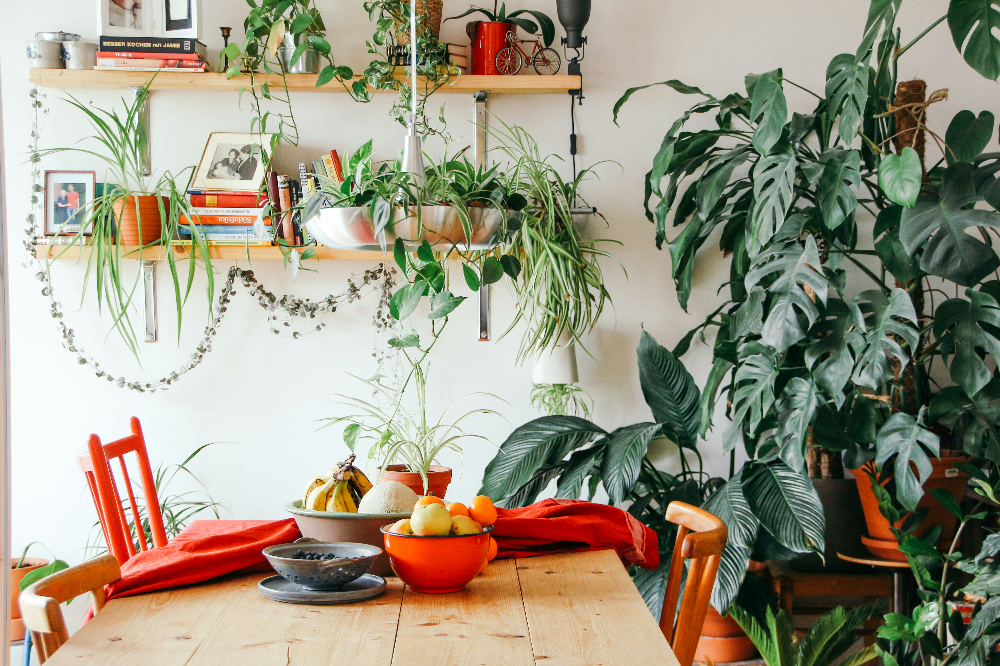

Plant Knowledge
Articles for happier, healthier houseplants.
Practical answers to watering questions, plant problems, pests, and all the little mysteries that come with growing plants at home.

Browse Articles
Plant questions, answered simply.
Explore practical advice for watering, troubleshooting, pests, and everyday houseplant care.
How Often Should You Water Houseplants?
Learn when your plants actually need water, how to check the soil, and why a fixed watering schedule doesn't always work.
How to Get Rid of Fungus Gnats
Learn why fungus gnats keep coming back and how to break their life cycle in your houseplants.
Why Are My Pothos Leaves Turning Yellow?
Explore common reasons pothos leaves turn yellow and what to check before changing your plant's care.
Why Are My Pothos Leaves Curling?
Learn what curling pothos leaves can mean and how to narrow down the most likely cause.
Why Are My Monstera Leaves Turning Yellow?
Work through watering, light, roots, and other common reasons Monstera leaves may turn yellow.
Why Aren't My Monstera Leaves Splitting?
Learn why Monstera leaves develop without splits and what helps encourage mature leaf growth.
Why Is My Snake Plant Drooping?
Find the likely reasons upright snake plant leaves begin leaning, bending, or falling over.
Why Does My Spider Plant Have Brown Tips?
Learn what can cause crispy brown leaf tips and what changes may help your spider plant.
Not Sure Where to Start?
Find a plant that fits your space.
Tell us a little about your light, routine, and home, and we'll help narrow down plants that may be a better match.
Find Your Plant →